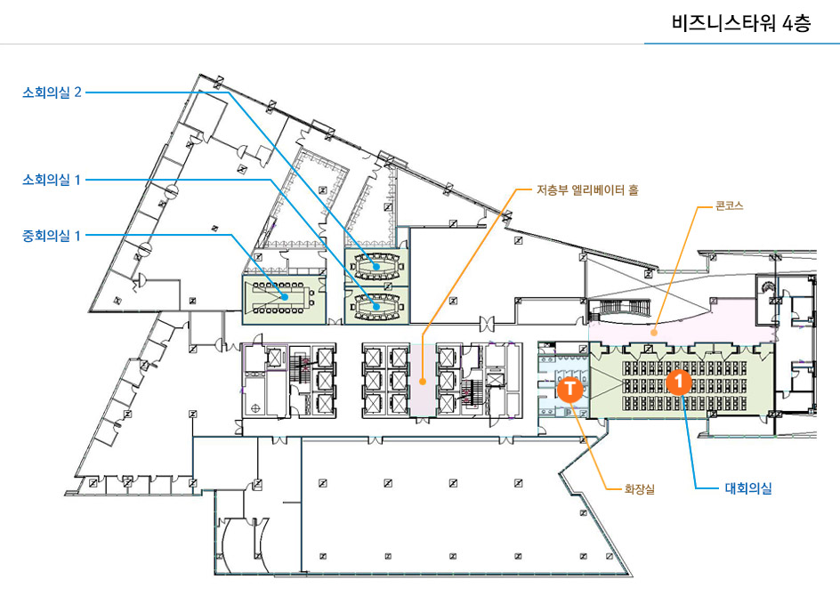

행사장
누리꿈 스퀘어
- 누리꿈 스퀘어 - 비즈니스타워 3층 & 4층
- 주소: 서울특별시 마포구 월드컵북로 396 (상암동, 누리꿈스퀘어)
행사장 내부
건물 내부 안내도 이미지 출처: https://nuri.nipa.kr/rt/

비즈니스 타워 3층
- (1) 로비 & 등록데스크
- (2) 국제회의실 - 기조연설 및 강연
- (2-1) 발표자 대기실
- (3) 중회의실2 - BoF(Birds of Feathers) 및 강연
- (4) 중회의실1 - 후원사 전시부스
- (T) 화장실

비즈니스 타워 4층
- (1) 대회의실 - 워크샵 및 강연
- (T) 화장실
행사장 가는 길
서울시 가는 길
항공편
인천국제공항(ICN)과 김포국제공항(GMP)이 행사장에서 가장 가까운 국제 공항 입니다. 인천국제공항은 규모가 더 크고 국제선 항공편이 더 많으며, 김포국제공항은 도심에서 더 가까워 접근성이 좋습니다.
기차
타 지역에서 일반 열차나 KTX로 오신다면, 아래와 같은 가까운 기차역을 이용하실 수 있습니다.
- 서울역
- 용산역
- 행신역
인천국제공항(ICN)에서 행사장으로
대중교통
- 터미널1과 터미널2 양쪽 모두 공항철도 역이 있습니다. 인천공항1터미널 (A10) 및 인천공항2터미널 (A11).역이며, 탑승하신 후 디지털미디어시티 (A04)역에서 하차 하시면 됩니다.
- 하차 후, 디지털미디어시티역 2번 출구로 나가세요. 길 건너편에 디지털미디어시티역2번출구 버스 정류장이 있습니다. 6715번, 7730번, 7711번 또는 771번 버스를 탑승 하셔서, 누리꿈스퀘어.MBC 버스 정류장에서 하차 하시면, 바로 앞에 행사장 건물이 있습니다.
택시
택시로 행사장 까지 이동도 가능 합니다. 택시 요금은 인천공항 1터미널에서 약 42,740원, 인천공항 2터미널에서 약 42,840원 입니다. 이 페이지 에서 택시 이용에 대한 더 자세한 정보를 확인하세요.
김포국제공항(GMP)에서 행사장으로
대중교통
- 공항 청사 근처에 있는 공항철도 김포공항 (A05)역에서 탑승 하시면 되며, 탑승하신 후 디지털미디어시티 (A04)역에서 하차 하시면 됩니다.
- 하차 후, 디지털미디어시티역 2번 출구로 나가세요. 길 건너편에 디지털미디어시티역2번출구 버스 정류장이 있습니다. 6715번, 7730번, 7711번 또는 771번 버스를 탑승 하셔서, 누리꿈스퀘어.MBC 버스 정류장에서 하차 하시면, 바로 앞에 행사장 건물이 있습니다.
택시
택시로 행사장 까지 이동도 가능 합니다. 택시 요금은 약 14,510원 입니다. 이 페이지 에서 택시 이용에 대한 더 자세한 정보를 확인하세요.